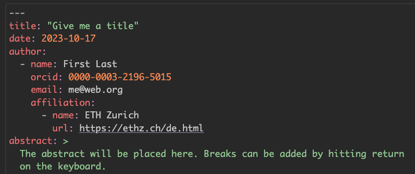

Rows: 50 Columns: 6
── Column specification ────────────────────────────────────────────────────────
Delimiter: ","
chr (3): title, lecturer, learning_objectives
dbl (1): module
lgl (2): date, teaser
ℹ Use `spec()` to retrieve the full column specification for this data.
ℹ Specify the column types or set `show_col_types = FALSE` to quiet this message.Joining tables & Creating and publishing scholarly articles with Quarto and GitHub pages
Research Beyond the Lab: Open Science and Research Methods for a Global Engineer
Learning Objectives (for this week)
- Learners can apply functions from the dplyr R Package to join multiple data sets.
- Learners can add literature references to Quarto files using the navigation menu of RStudio visual editor and using an exported collection in .bib format from Zotero Reference Management software
- Learners can use the GitHub pages service to publish a repository as a standalone website.
Part 2: Joining data
We…
…have multiple data frames
…want to bring them together
Rows: 10 Columns: 2
── Column specification ────────────────────────────────────────────────────────
Delimiter: ","
chr (2): name, profession
ℹ Use `spec()` to retrieve the full column specification for this data.
ℹ Specify the column types or set `show_col_types = FALSE` to quiet this message.
Rows: 8 Columns: 3
── Column specification ────────────────────────────────────────────────────────
Delimiter: ","
chr (1): name
dbl (2): birth_year, death_year
ℹ Use `spec()` to retrieve the full column specification for this data.
ℹ Specify the column types or set `show_col_types = FALSE` to quiet this message.
Rows: 9 Columns: 2
── Column specification ────────────────────────────────────────────────────────
Delimiter: ","
chr (2): name, known_for
ℹ Use `spec()` to retrieve the full column specification for this data.
ℹ Specify the column types or set `show_col_types = FALSE` to quiet this message.professions <- read_csv(here::here("data/scientists/professions.csv"))
dates <- read_csv(here::here("data/scientists/dates.csv"))
works <- read_csv(here::here("scientists/works.csv")) Data: Women in science
Information on 10 women in science who changed the world
| name |
|---|
| Ada Lovelace |
| Marie Curie |
| Janaki Ammal |
| Chien-Shiung Wu |
| Katherine Johnson |
| Rosalind Franklin |
| Vera Rubin |
| Gladys West |
| Flossie Wong-Staal |
| Jennifer Doudna |
Source: Discover Magazine
Inputs
professions |> kable()| name | profession |
|---|---|
| Ada Lovelace | Mathematician |
| Marie Curie | Physicist and Chemist |
| Janaki Ammal | Botanist |
| Chien-Shiung Wu | Physicist |
| Katherine Johnson | Mathematician |
| Rosalind Franklin | Chemist |
| Vera Rubin | Astronomer |
| Gladys West | Mathematician |
| Flossie Wong-Staal | Virologist and Molecular Biologist |
| Jennifer Doudna | Biochemist |
dates |> kable()| name | birth_year | death_year |
|---|---|---|
| Janaki Ammal | 1897 | 1984 |
| Chien-Shiung Wu | 1912 | 1997 |
| Katherine Johnson | 1918 | 2020 |
| Rosalind Franklin | 1920 | 1958 |
| Vera Rubin | 1928 | 2016 |
| Gladys West | 1930 | NA |
| Flossie Wong-Staal | 1947 | NA |
| Jennifer Doudna | 1964 | NA |
works |> kable()| name | known_for |
|---|---|
| Ada Lovelace | first computer algorithm |
| Marie Curie | theory of radioactivity, discovery of elements polonium and radium, first woman to win a Nobel Prize |
| Janaki Ammal | hybrid species, biodiversity protection |
| Chien-Shiung Wu | confim and refine theory of radioactive beta decy, Wu experiment overturning theory of parity |
| Katherine Johnson | calculations of orbital mechanics critical to sending the first Americans into space |
| Vera Rubin | existence of dark matter |
| Gladys West | mathematical modeling of the shape of the Earth which served as the foundation of GPS technology |
| Flossie Wong-Staal | first scientist to clone HIV and create a map of its genes which led to a test for the virus |
| Jennifer Doudna | one of the primary developers of CRISPR, a ground-breaking technology for editing genomes |
Desired output
professions %>%
left_join(dates) %>%
left_join(works) |>
kable()Joining with `by = join_by(name)`
Joining with `by = join_by(name)`| name | profession | birth_year | death_year | known_for |
|---|---|---|---|---|
| Ada Lovelace | Mathematician | NA | NA | first computer algorithm |
| Marie Curie | Physicist and Chemist | NA | NA | theory of radioactivity, discovery of elements polonium and radium, first woman to win a Nobel Prize |
| Janaki Ammal | Botanist | 1897 | 1984 | hybrid species, biodiversity protection |
| Chien-Shiung Wu | Physicist | 1912 | 1997 | confim and refine theory of radioactive beta decy, Wu experiment overturning theory of parity |
| Katherine Johnson | Mathematician | 1918 | 2020 | calculations of orbital mechanics critical to sending the first Americans into space |
| Rosalind Franklin | Chemist | 1920 | 1958 | NA |
| Vera Rubin | Astronomer | 1928 | 2016 | existence of dark matter |
| Gladys West | Mathematician | 1930 | NA | mathematical modeling of the shape of the Earth which served as the foundation of GPS technology |
| Flossie Wong-Staal | Virologist and Molecular Biologist | 1947 | NA | first scientist to clone HIV and create a map of its genes which led to a test for the virus |
| Jennifer Doudna | Biochemist | 1964 | NA | one of the primary developers of CRISPR, a ground-breaking technology for editing genomes |
Inputs, reminder
names(professions)[1] "name" "profession"names(dates)[1] "name" "birth_year" "death_year"names(works)[1] "name" "known_for"nrow(professions)[1] 10nrow(dates)[1] 8nrow(works)[1] 9Joining data frames
something_join(x, y)left_join(): all rows from xright_join(): all rows from yfull_join(): all rows from both x and y- …
Setup
For the next few slides…
x <- tibble(
id = c(1, 2, 3),
value_x = c("x1", "x2", "x3")
)x# A tibble: 3 × 2
id value_x
<dbl> <chr>
1 1 x1
2 2 x2
3 3 x3 y <- tibble(
id = c(1, 2, 4),
value_y = c("y1", "y2", "y4")
)y# A tibble: 3 × 2
id value_y
<dbl> <chr>
1 1 y1
2 2 y2
3 4 y4 left_join()

left_join(x, y)Joining with `by = join_by(id)`# A tibble: 3 × 3
id value_x value_y
<dbl> <chr> <chr>
1 1 x1 y1
2 2 x2 y2
3 3 x3 <NA> left_join()
professions %>%
left_join(dates) Joining with `by = join_by(name)`| name | profession | birth_year | death_year |
|---|---|---|---|
| Ada Lovelace | Mathematician | NA | NA |
| Marie Curie | Physicist and Chemist | NA | NA |
| Janaki Ammal | Botanist | 1897 | 1984 |
| Chien-Shiung Wu | Physicist | 1912 | 1997 |
| Katherine Johnson | Mathematician | 1918 | 2020 |
| Rosalind Franklin | Chemist | 1920 | 1958 |
| Vera Rubin | Astronomer | 1928 | 2016 |
| Gladys West | Mathematician | 1930 | NA |
| Flossie Wong-Staal | Virologist and Molecular Biologist | 1947 | NA |
| Jennifer Doudna | Biochemist | 1964 | NA |
right_join()

right_join(x, y)Joining with `by = join_by(id)`# A tibble: 3 × 3
id value_x value_y
<dbl> <chr> <chr>
1 1 x1 y1
2 2 x2 y2
3 4 <NA> y4 right_join()
professions %>%
right_join(dates)Joining with `by = join_by(name)`| name | profession | birth_year | death_year |
|---|---|---|---|
| Janaki Ammal | Botanist | 1897 | 1984 |
| Chien-Shiung Wu | Physicist | 1912 | 1997 |
| Katherine Johnson | Mathematician | 1918 | 2020 |
| Rosalind Franklin | Chemist | 1920 | 1958 |
| Vera Rubin | Astronomer | 1928 | 2016 |
| Gladys West | Mathematician | 1930 | NA |
| Flossie Wong-Staal | Virologist and Molecular Biologist | 1947 | NA |
| Jennifer Doudna | Biochemist | 1964 | NA |
full_join()

full_join(x, y)Joining with `by = join_by(id)`# A tibble: 4 × 3
id value_x value_y
<dbl> <chr> <chr>
1 1 x1 y1
2 2 x2 y2
3 3 x3 <NA>
4 4 <NA> y4 full_join()
dates %>%
full_join(works) Joining with `by = join_by(name)`| name | birth_year | death_year | known_for |
|---|---|---|---|
| Janaki Ammal | 1897 | 1984 | hybrid species, biodiversity protection |
| Chien-Shiung Wu | 1912 | 1997 | confim and refine theory of radioactive beta decy, Wu experiment overturning theory of parity |
| Katherine Johnson | 1918 | 2020 | calculations of orbital mechanics critical to sending the first Americans into space |
| Rosalind Franklin | 1920 | 1958 | NA |
| Vera Rubin | 1928 | 2016 | existence of dark matter |
| Gladys West | 1930 | NA | mathematical modeling of the shape of the Earth which served as the foundation of GPS technology |
| Flossie Wong-Staal | 1947 | NA | first scientist to clone HIV and create a map of its genes which led to a test for the virus |
| Jennifer Doudna | 1964 | NA | one of the primary developers of CRISPR, a ground-breaking technology for editing genomes |
| Ada Lovelace | NA | NA | first computer algorithm |
| Marie Curie | NA | NA | theory of radioactivity, discovery of elements polonium and radium, first woman to win a Nobel Prize |
Putting it altogether
professions %>%
left_join(dates) %>%
left_join(works) Joining with `by = join_by(name)`
Joining with `by = join_by(name)`| name | profession | birth_year | death_year | known_for |
|---|---|---|---|---|
| Ada Lovelace | Mathematician | NA | NA | first computer algorithm |
| Marie Curie | Physicist and Chemist | NA | NA | theory of radioactivity, discovery of elements polonium and radium, first woman to win a Nobel Prize |
| Janaki Ammal | Botanist | 1897 | 1984 | hybrid species, biodiversity protection |
| Chien-Shiung Wu | Physicist | 1912 | 1997 | confim and refine theory of radioactive beta decy, Wu experiment overturning theory of parity |
| Katherine Johnson | Mathematician | 1918 | 2020 | calculations of orbital mechanics critical to sending the first Americans into space |
| Rosalind Franklin | Chemist | 1920 | 1958 | NA |
| Vera Rubin | Astronomer | 1928 | 2016 | existence of dark matter |
| Gladys West | Mathematician | 1930 | NA | mathematical modeling of the shape of the Earth which served as the foundation of GPS technology |
| Flossie Wong-Staal | Virologist and Molecular Biologist | 1947 | NA | first scientist to clone HIV and create a map of its genes which led to a test for the virus |
| Jennifer Doudna | Biochemist | 1964 | NA | one of the primary developers of CRISPR, a ground-breaking technology for editing genomes |
Part 2: Reference Management
Four terms
- Citation
- Reference
- Bibliography
- Citation Style Language (CSL)
What’s a Citation?
- Inequality underpins waste management systems, structuring who can or cannot access services (Kalina et al., 2023).
- Many visitors still expect a personal pick-up, despite the availability of taxi services (Tilley & Kalina, 2021).
- In Tilley & Kalina (2021), the authors describe how visitors still expect a personal pick-up, despite the availability of taxi services.
Explanation A citation is a reference to the source of information used in your research. Any time you directly quote, paraphrase, or summarize the essential elements of someone else’s idea in your work, an in-text citation should follow. For example, in APA style, a citation might look like this: (Tilley and Kalina, 2021).
Analogy Think of a citation as a signpost on a road trip. It tells you where the information came from and points you in the direction of the full details (the destination), which can be found in the reference list.
What’s a Citation?
- Inequality underpins waste management systems, structuring who can or cannot access services (Kalina et al., 2023).
- Many visitors still expect a personal pick-up, despite the availability of taxi services (Tilley & Kalina, 2021).
- In Tilley & Kalina (2021), the authors describe how visitors still expect a personal pick-up, despite the availability of taxi services.
Important: The period is after the citation.
What’s a Reference?
- detailed description of the source of information
- author’s name, title, year of publication, publisher, DOI, etc.
Tilley, E., & Kalina, M. (2021). “My flight arrives at 5 am, can you pick me up?”: The gatekeeping burden of the african academic. Journal of African Cultural Studies, 33(4), 538–548. https://doi.org/10.3929/ethz-b-000493677
Explanation
A reference is a detailed description of the source of information that you want to give credit to via a citation. In APA style, a reference provides comprehensive details about a source, including the author’s name, the title of the source, the year of publication, and the publisher or URL.
Analogy
A reference is like a detailed map at the end of your road trip (paper). It provides all the details about the source (destination) that the citation (signpost) pointed to.
What’s a Bibliography?
- list of references in a research paper or project
- includes all sources used, whether they were directly quoted or not
- listed alphabetically by the author’s last name in the reference list
References
Kalina, M., Makwetu, N., & Tilley, E. (2023). “The rich will always be able to dispose of their waste”: A view from the frontlines of municipal failure in Makhanda, South Africa. Environment, Development and Sustainability. https://doi.org/10.1007/s10668-023-03363-1
Tilley, E., & Kalina, M. (2021). “My flight arrives at 5 am, can you pick me up?”: The gatekeeping burden of the african academic. Journal of African Cultural Studies, 33(4), 538–548. https://doi.org/10.3929/ethz-b-000493677
What’s the Citation Style Language (CSL)?
- It’s what your citation and generated bibliography look like
- APA (American Psychological Association) Style, Chicago Style, IEEE Style, Vancouver Style, etc. (over 10,000 styles in Zotero Style Repository)
The Citation Style Language (CSL) describes the formatting of citations, notes, and bibliographies. It was created to provide an open format that can be used by any application
What’s the Citation Style Language (CSL)?
author-date: Many visitors still expect a personal pick-up, despite the availability of taxi services (Tilley & Kalina, 2021).
numeric Many visitors still expect a personal pick-up, despite the availability of taxi services [1].
Why use a reference management tool?
Managing references manually:
- is a lot of work
- is prone to mistakes
- makes you lose track

Why use Zotero?
- free
- open source: developed in public
- transparent about access to your own data
- cross-platform (Windows, Mac, Linux)
- collaboration in groups
- integration with word processors

Mendeley
- Mendeley is owned by Elsevier.
- It encrypts your database and makes money with your data
- You can only collaborate with 3 people on one project.
EndNote
- EndNote doesn’t come free, you need to buy a license.
- They also used a prioprietary citation style files that could only be opened by EndNote.
Scholarly Articles in Quarto
Quarto supports
a standardized schema for authors and affiliations that can be expressed once int the source document,
the use of Citation Style Language (CSL) to automate the formatting of citations and bibliographies, and
outputting to
pdf,html, anddocxwith custom formatting,
. . .
according to the styles required for various journals,
. . .
and creating the LaTeX required for submission to multiple journals.
Front matter
Quarto provides a rich set of YAML metadata keys to describe the details required in the front matter of scholarly articles.
- title
- author
- affiliation
- abstract
- keywords
- citation
- licensing
- etc.


Our turn: md-08-exercises
- Open posit.cloud in your browser (use your bookmark).
- Open the rbtl-fs24 workspace for the course.
- Open md-08-exercises.
- In the File Manager in the bottom right window, locate the
scholarly-writing.qmdfile and click on it to open it in the top left window. - Follow along on the screen using the instructions in the document.
countdown(15)15:00
Publishing
Our turn: md-08-publish-USERNAME
Clone the repository from GitHub
- Open github.com in your browser and navigate to the GitHub organisation for the course: https://github.com/rbtl-fs24/.
- Find the repository md-08-publish-USERNAME that ends with your GitHub username, and open it.
- Click on the green “Code” button.
- Copy the HTTPS URL to your clipboard.
- Open the ds4owd workspace on posit.cloud
- Click New Project > New Project from Git Repository
- Paste the HTTPS URL from GitHub into the “URL of your Git Repository” field.
- Wait until the project is deployed.
- From the Files Manager in the bottom right window, open
docsfolder, then click onindex.qmd. - Indicate the open Poll with “ready to go” when you are ready.
countdown::countdown(20)20:00
GitHub Pages
- GitHub Pages is a free service for hosting static websites. It is ideal for blogs, course or project websites, books, presentations, and personal hobby sites.

Minimal Example - Requirements
- Landing site needs to be stored as
index.qmd - The
index.qmdneeds to be stored indocsfolder - Example works well for a report/article as a stand-alone page
- Quarto provides a framework and examples for more complex websites: https://quarto.org/docs/websites/
Course Guide
- Steps for publishing the capstone project report are described in course guide
- https://rbtl-fs24.github.io/website/guide/#publish-to-github-pages
Take a break
Please get up and move! Let your emails rest in peace.

countdown(minutes = 10)10:00
Capstone project
Course certificate
- You will receive a course certificate if you complete the capstone project.
- The course certificate will be issued by the openwashdata academy.
- The certificate will highlight the time you have invested and the tools you learned to navigate.
- The certificate can include a link to your public capstone project report (voluntary).
- We would like to add a graduates section to https://openwashdata.org/ and highlight course graduates (e.g. link to report, GitHub profile, LinkedIn profile, ORCID profile)
Submission
- The submission due date is: Tuesday, 13th February.
- You will need to work through Module 5 & Module 7 homework assignments to get started.
- We will use the GitHub issue tracker to communicate and ask questions about the capstone project.
- A list of required items for submission is covered on the course website: https://rbtl-fs24.github.io/website/project/
- If you require an extension, please reach to us via email: ghe@mavt.ethz.ch
Your turn: Capstone project - Read and take notes
- Open: https://rbtl-fs24.github.io/website/project/.
- Read through the page.
- For the list in “Required items” note down the numbers of those that are unclear to you and why.
- After the time is up, you will join a break-out room and discuss the unclear items with your peers.
countdown(10)10:00
Your turn: Capstone project - Discuss unclear items
- Join the break-out room.
- Discuss with your peers the unclear items you noted down.
countdown(10)10:00
Wrap-up
Homework assignment
- No more homework assignments
- Use the time to work on your capstone project
Student hours
- Every Thursday, 2:00 to 3:30 PM (CET)
- Final student hours: Thursday, February 08, 2:00 to 3:30 PM (CET)
Next week: openwashdata webinar
- Date: Tuesday, January 23, 2:00 - 3:00 PM (CET)
- Zoom Registration: https://ethz.zoom.us/meeting/register/u50lce-vrD0iGN06ywPHr2gPU84Ljr_zmNAf
- More info: https://openwashdata.org/pages/events/2023-01-24-webinar-data-publishing
agenda <- readr::read_csv("https://raw.githubusercontent.com/openwashdata/website/main/pages/events/2023-01-24-webinar-data-publishing/data/tbl-07-webinar-data-sharing-agenda.csv")Rows: 4 Columns: 8
── Column specification ────────────────────────────────────────────────────────
Delimiter: ","
chr (6): title, speaker, speaker_link, affiliation, affiliation_link, time
time (2): start_time, end_time
ℹ Use `spec()` to retrieve the full column specification for this data.
ℹ Specify the column types or set `show_col_types = FALSE` to quiet this message.agenda |>
dplyr::select(-start_time, -end_time, -speaker_link, -affiliation_link) |>
dplyr::relocate(time) |>
dplyr::rename_with(~stringr::str_to_title(.x), everything()) |>
knitr::kable()| Time | Title | Speaker | Affiliation |
|---|---|---|---|
| 02:00 - 02:05 | Welcome | Elizabeth Tilley | Professor at ETH Zurich, Global Health Engineering |
| 02:05 - 02:25 | openwashdata community & workflow | Lars Schöbitz | Open Science Specialist at ETH Zurich, Global Health Engineering |
| 02:25 - 02:45 | Open data: A publishers perspective | Lauren Cadwallader | Open Research Manager at Public Library of Science (PLOS) |
| 02:45 - 03:00 | Discussion | Elizabeth Tilley | Professor at ETH Zurich, Global Health Engineering |
Module 09: Using AI for software development in R
- Date: Tuesday, January 30, 2:00 - 4:30 PM (CET)
Module 10: Graduation party
- Date: Tuesday, February 20, 2:00 - 3:00 PM (CET)
Attribution
Content was re-used from a workshop hosted by Mine Çetinkaya-Rundel at the 2023 Symposium on Data Science and Statistics and stored at https://github.com/mine-cetinkaya-rundel/quarto-sdss. The original content is licensed under a Creative Commons Attribution 4.0 International License.
Thanks! 🌻
Slides created via revealjs and Quarto: https://quarto.org/docs/presentations/revealjs/ Access slides as PDF on GitHub